Evidencias de la Unidad 2
Capturas tomadas el 04/11/2026 sobre el pipeline en ejecución (Open-Meteo → Kafka → Spark Structured Streaming → Pushgateway → Prometheus → Grafana). Cada bloque indica el criterio de la rúbrica que respalda.
1 y 2. Ingesta con Kafka (eventos empresariales y de sensor)
Topics del pipeline en Kafka UI. atmos-aire (12 845 mensajes, 2 MB), atmos-clima (12 779, 3 MB) y atmos-negocio (1 125, 220 KB), con 1 partición y factor de replicación 1. Los demás topics (atmos-eventos, atmos-real, clima-real-eventos) pertenecen a sesiones anteriores del curso.
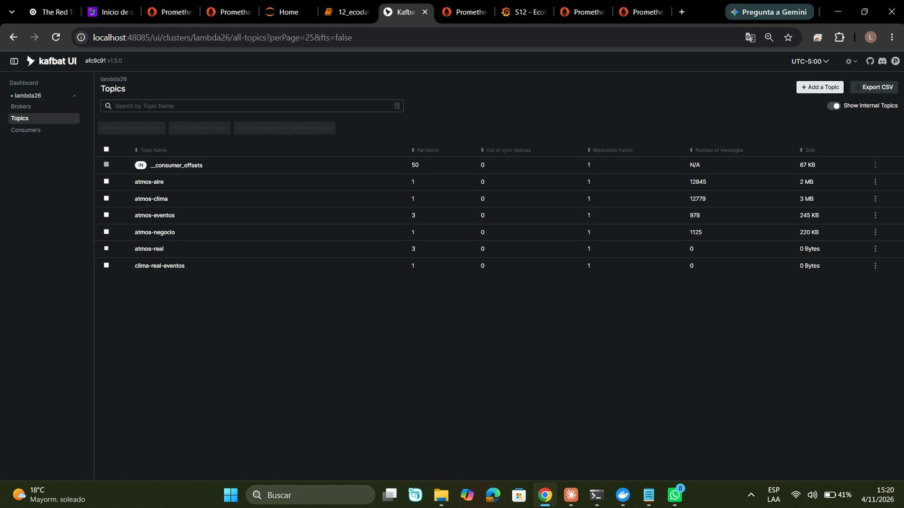
Un mensaje abierto de atmos-aire. Se ve la clave (openmeteo-cams-juliaca), el contrato JSON (tipoEvento, sensorId, pm25, pm10, origen, timestamp) y el tamaño real del evento (150 bytes). Esquema versionado en Contrato de eventos.
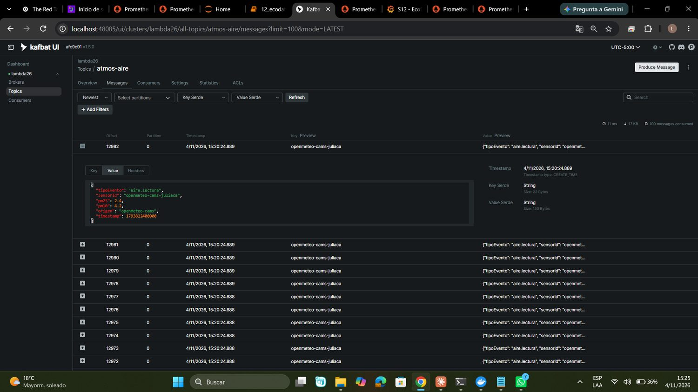
Publicación y conteo desde Jupyter. El notebook publica desde la API de Open-Meteo y cuenta los eventos por topic. (Captura tomada antes de la segunda publicación; los totales exactos son los de Kafka UI.)
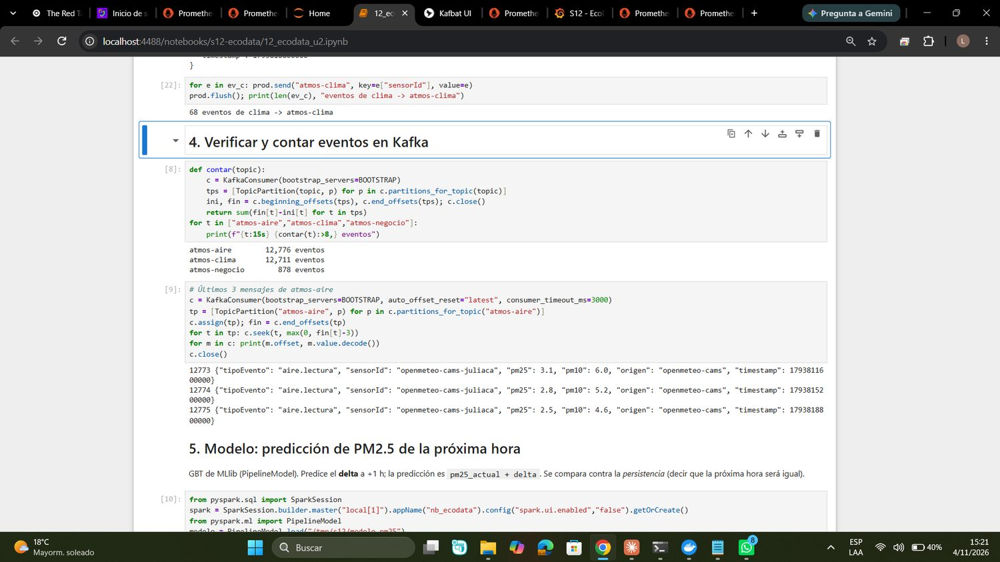
3. Streaming con Spark
Jobs de streaming lanzados desde el notebook. Un job por dimensión (aire y clima), ambos en ejecución, con su registro de arranque.
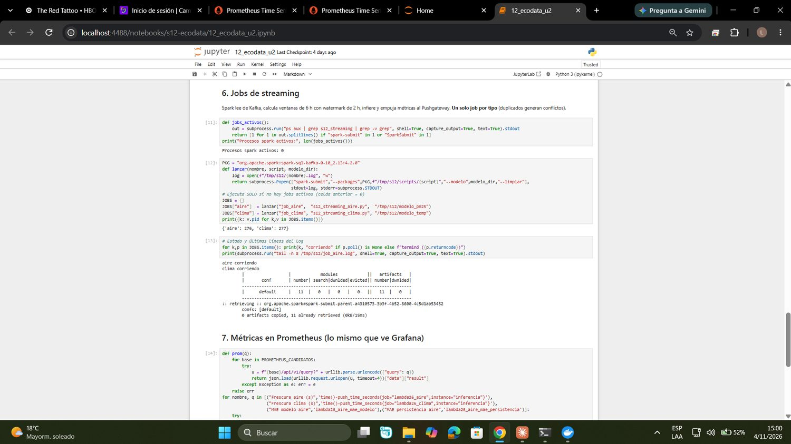
Watermark en acción. Al reenviar las últimas 48 h de la API, las horas más antiguas llegan fuera del watermark de 2 h y Spark las descarta y las cuenta: el panel «Filas descartadas por watermark» pasa de 0 a 20 y se dispara la alerta informativa DescartesPorWatermarkCreciendo.
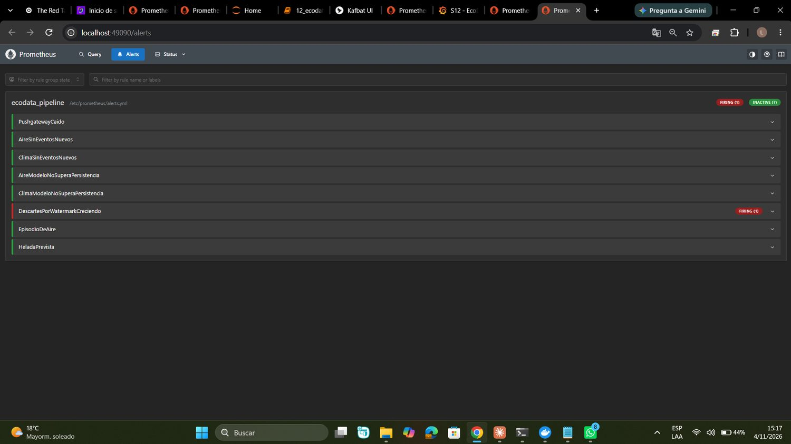
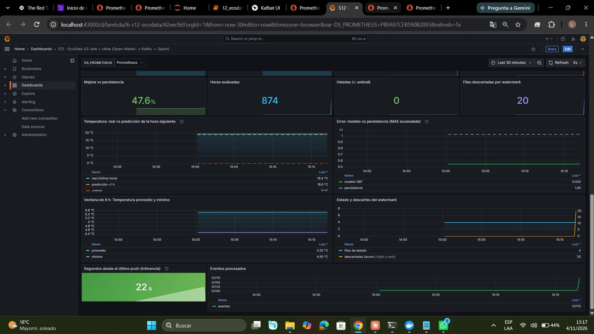
4. Observabilidad
Prometheus: targets. pushgateway, kafka-exporter y prometheus en estado UP.
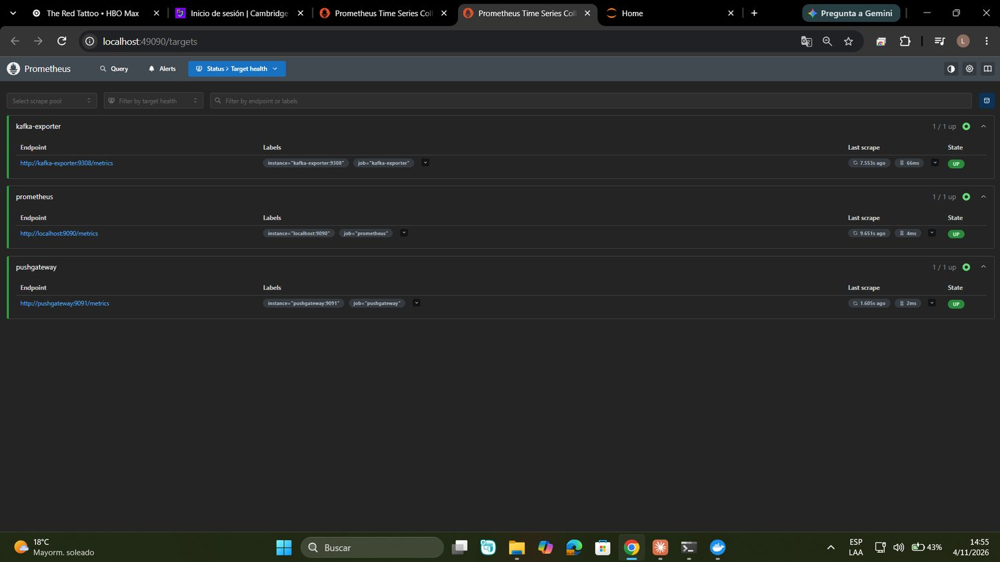
Reglas de alerta cargadas. Las ocho reglas del grupo ecodata_pipeline. Las dos de frescura usan absent() para disparar también si el job nunca empujó métricas. Archivo: s12/operacion/prometheus/alerts.yml.
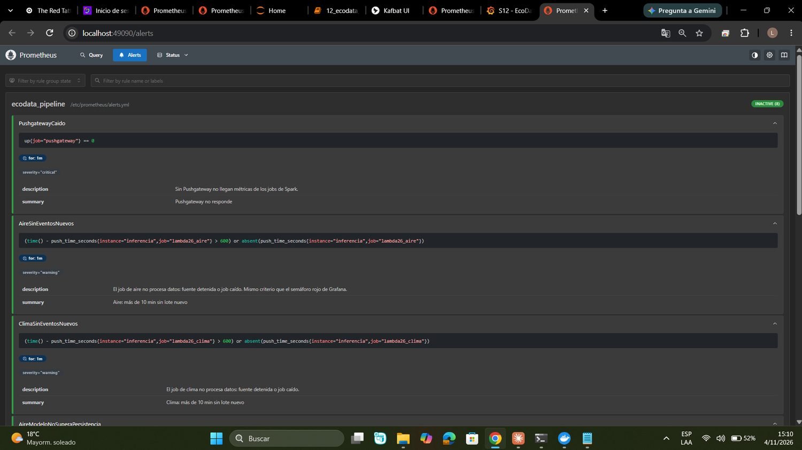
Correlación: la fuente se detiene → frescura → alerta. Al dejar de llegar datos, «Segundos desde el último push» superó los 600 s (14 min) y el semáforo pasó a rojo.
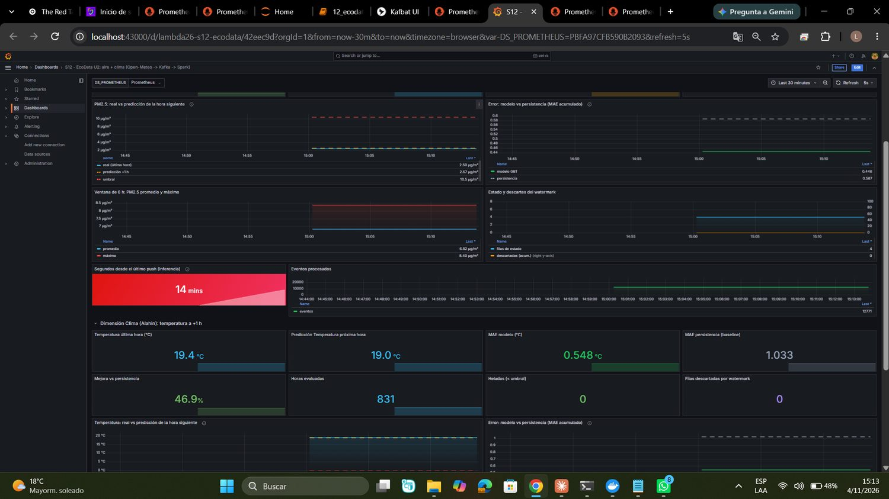
Las alertas AireSinEventosNuevos y ClimaSinEventosNuevos pasaron a Firing.
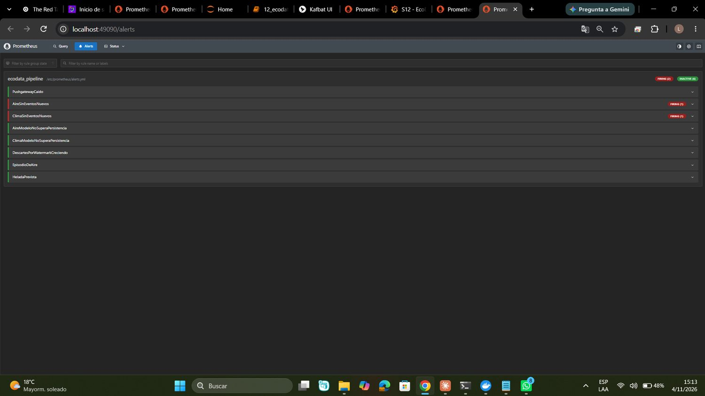
Recuperación. Al publicar de nuevo, la frescura bajó a 27 s, el semáforo volvió a verde y las alertas se resolvieron.
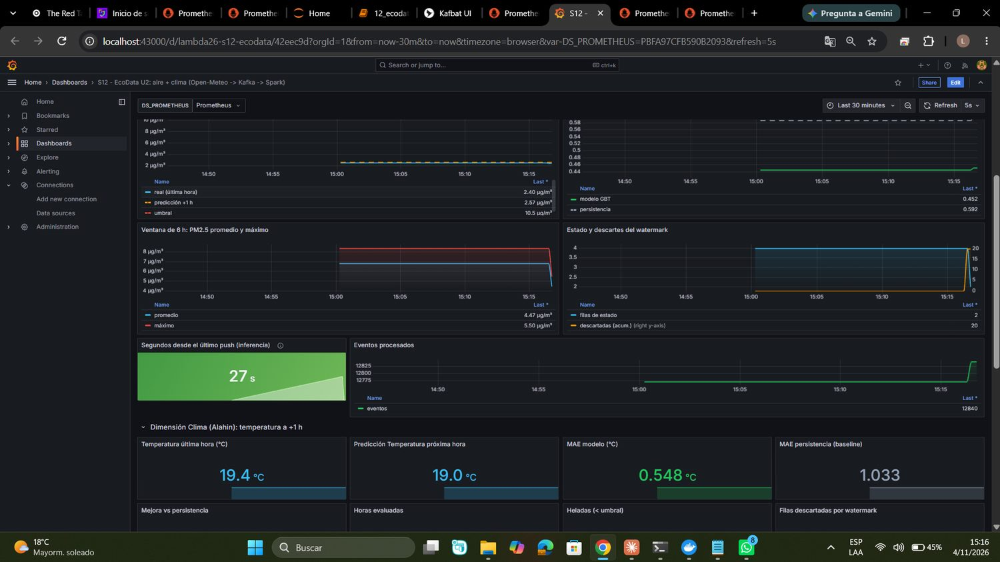
5. Costos y escalado
Volúmenes medidos, tarifas de referencia y ruta de crecimiento en Operación, escalado y costos.
6 y 7. Salidas BI/ML e inferencia validada
Predicción de PM2.5 a +1 h. Con 2,50 µg/m³ a las 19:00 UTC, el modelo GBT predice un delta de +0,07 y 2,57 µg/m³ para la hora siguiente, lejos del umbral de episodio (10,5 µg/m³, el p95 del entrenamiento).
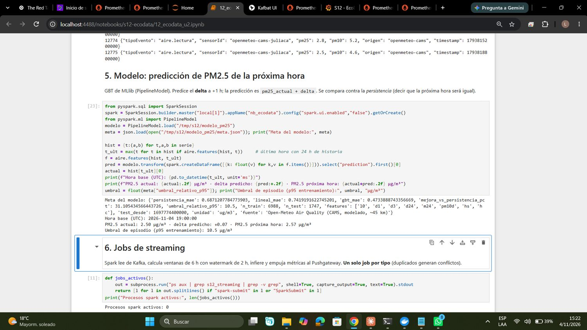
Métricas leídas de Prometheus y del Pushgateway. Modelo frente a persistencia en aire (MAE 0,446 frente a 0,587, mejora de 24,1 %) y clima (MAE 0,548 frente a 1,033, mejora de 46,9 %).
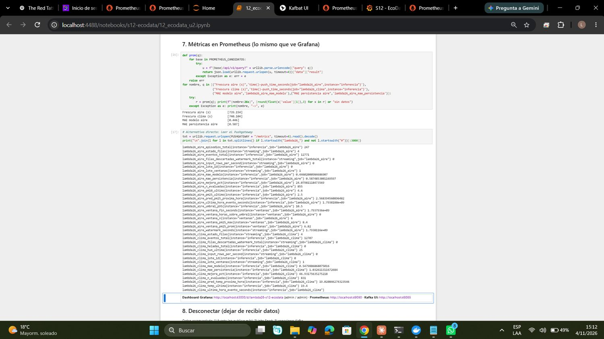
Dashboard de Grafana, sección de clima. Temperatura real y predicción a +1 h, MAE del modelo frente a la persistencia y mejora acumulada.
Nota sobre las cifras
Los contadores acumulados (eventos procesados, horas evaluadas, filas descartadas) incluyen los replays de la demostración, por lo que no equivalen a horas distintas de datos reales. Las métricas de error (MAE) son las comparables.